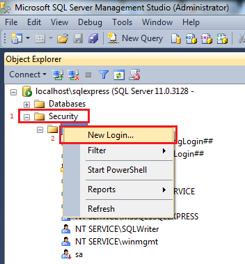
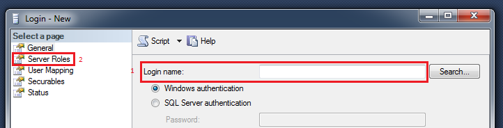
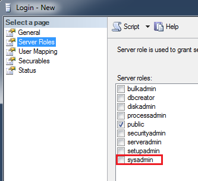
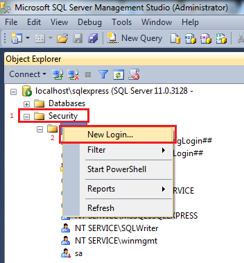
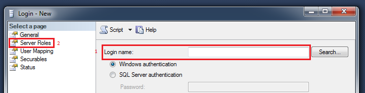
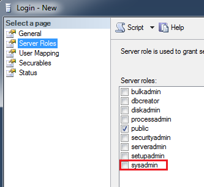

You receive the error message "Failed to login by user: <Netwrix service account>".
The Netwrix service account does not have access to login/upload data to the SQL database.
Login to SQL Server Management Studio for your SQL instance and perform the following steps: 1. Select Security 2. Select New Login  1. Enter the netwrix service account into the Login name field 2. Select Server Roles  Check sysadmin role to give full access to the netwrix service account 
The Netwrix service account does not have access to login/upload data to the SQL database.
Login to SQL Server Management Studio for your SQL instance and perform the following steps: 1. Select Security 2. Select New Login  1. Enter the netwrix service account into the Login name field 2. Select Server Roles  Check sysadmin role to give full access to the netwrix service account 